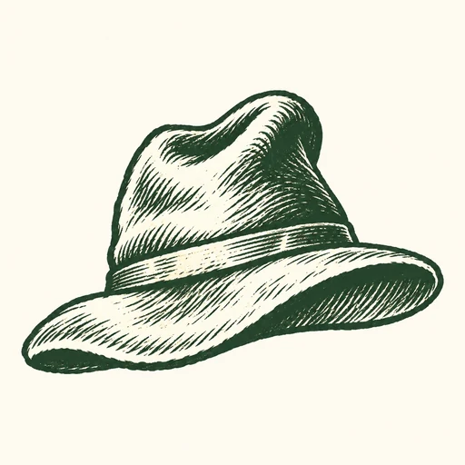

- Visible artwork
- —
- From left
- —
- From bottom
- —
In your album
A woodland find

hat
A hat for a very small head!
Tap either side of the meadow or use the arrow keys to step. Drag the timeline to inspect a frame.

A hat for a very small head!
Tap either side of the meadow or use the arrow keys to step. Drag the timeline to inspect a frame.